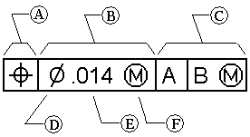

Geometric tolerancing
Geometric tolerancing is a form of annotation that you can use to provide additional information about the features of a part. While dimensions and their associated tolerances give information about the acceptable variation in the size or location of a feature on a part, geometric tolerancing establishes the relationships between features on a part. For example, you can define the tolerance for the position of a hole in a part in relation to other features, or datums, on the part.
In the Draft environment, you can define the geometric tolerances with the following commands:
-
The Feature Control Frame command specifies the necessary tolerance on a feature in relation to reference letters for other features of a part, called datums.
-
You can identify the datums on your part using the Datum Frame command.
-
You can specify datum points, lines, planes, or areas for special function or manufacturing and inspection using the Datum Target command.
-
The Solid Edge Symbol fonts support the ANSI, ISO, DIN, BIS, JIS, GOST, ESKD, and GB drafting standards for geometric dimensioning and tolerance callouts. You can insert these symbols using the Symbols and Values dialog box, or by typing the three-character property text codes.
For a complete list of the symbols and values you can insert, see Property text codes.
-
You can use the Microsoft Character Map dialog box to insert Chinese, Japanese, and Korean language characters into the caption text, as well as symbols not supported by the Solid Edge Symbol fonts.Choose a font that supports those characters, for example, Arial Unicode MS.
For more information, see Insert a font character into a text box.
Feature control frames
A feature control frame is composed of two or more rectangular compartments that contain information about tolerances. The first block always contains a geometric characteristic symbol. Subsequent compartments contain tolerance values and symbols representing part variations, such as maximum material condition. You can create the feature control frame by typing text and selecting symbols from a dialog box.
You can refer to up to four datums in a feature control frame.
A feature control frame has the following parts:

|
(A) |
Geometric characteristic symbol |
|
(B) |
Tolerance |
|
(C) |
Datum reference |
|
(D) |
Tolerance zone symbol |
|
(E) |
Tolerance value |
|
(F) |
Material condition symbol |
A valid feature control frame must contain these two components:
-
Geometric characteristic symbol
-
Tolerance
Some geometric characteristics also require a reference to a datum in the feature control frame. You can apply material conditions to the tolerance and datum references. You can also apply a diametral tolerance zone to the tolerance.
How do I
Place a feature control frame or datum frameDefine feature control frame content
Example: Add symbols to a feature control frame
Save a feature control frame
Activate a saved feature control frame
Place a datum target
Look up more details
Manipulating feature control framesFeature Control Frame command
Feature Control Frame command bar
Feature Control Frame Properties dialog box
General tab (Feature Control Frame Properties dialog box)
Datum Frame command
Datum Frame command bar
Datum Frame Properties dialog box
General tab (Datum Frame Properties dialog box)
Datum Target command
Datum Target command bar
Datum Target Properties dialog box
General tab (Datum Target Properties dialog box)